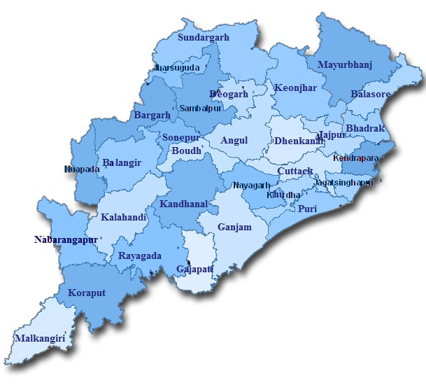

LET'S HAVE A LOOK AT THE TOUR MAP
WHERE TO VISIT , WHAT TO SEE?
SOME HOT PICKS(#HAVE_TO_VISIT)
- PURI - ONE OF THE FOUR MUST VISIT PILGRIMAGE SITES FOR HINDUS, BEACH CITY WITH JAGANNATH TEMPLE AS MAIN ATTRACTION
- BHUBANESHWAR - TEMPLE CITY OF INDIA
- KONARK - KONARK DANCE FESTIVAL AND THE SUN TEMPLE
- CUTTACK - CULTURE CAPITAL OF ORISSA
- BARIPADA - CITY KNOWN FOR IT'S RATH YATRA CONSIDERED TO BE THE BIGGEST AND OLDEST AFTER PURI, ALSO KNOWN AS SECOND PURI
- GOPALPUR - ONE OF THE BEST BEACHES OF THE EASTERN COASTLINE
- SAMBALPUR - TEMPLE DEVOTED TO DEVI SAMALESHWARI , HIRAKUD DAM (LONGEST MAN MADE DAM)
- TALASARI - PLACE WHERE THE SUBARNAREKHA RIVER MEETS WITH THE BAY OF BENGAL
- TIKARPADA WILDLIFE SANCTUARY
- JEYPORE - FRESH WATER LAKES , WATERFALLS AND VALLEYS
- DHAULI - LOCATED ON THE BANK OF RIVER DAYA, HOLDS A GREAT SIGNIFICANCE FOR FOLLOWERS OF LORD BUDDHA
- CHILIKA LAKE - LARGEST SALT WATER LAKE IN ASIA, PARADISE ON EARTH FOR BIRD WATCHERS
- SIMLIPAL NATIONAL PARK
- DARINGBADI - SURPRISE HILL STATION WITH PINE WOOD TREES
- KHANDAGIRI CAVES - ARTIFICIAL CAVES WHICH DATE BACK TO 2ND CENTURY
OTHER_ATTRACTIONS
- RAYAGADA - RICH HISTORY AND A DISTINCT CULTURE WITH LOCAL TRIBAL CULTURE
- CHANDIPUR
- ROURKELA - LARGEST STEEL CITY OF ORISSA
- BERHAMPUR - KNOWN AS BRAHMAPUR IS FAMOUS FOR ITS SILK TEXTILES